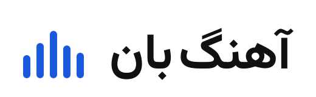

افزونه + شورتکد
سادهترین راه؛ بدون دستزدن به کد قالب. استایل فقط در همان صفحه بارگذاری میشود.
[ahangban_banner href="/saret-biad" cover="/wp-content/uploads/cover.webp"]

این صفحه همان خروجی افزونه و CSS را نشان میدهد؛ عنوان، نام هنرمند و دکمه متن واقعی HTML هستند و روی تصویر ۶۴۰×۳۶۰ مینشینند. جای کاور با یک جایگیر علامتگذاری شده و در سایت واقعی، کاور اصلی جای آن مینشیند.
پهنای این نمونه ۱۱۰۰ پیکسل است؛ متن با cqw متناسب با پهنای بنر بزرگ میشود و از منطقهٔ امن بیرون نمیزند.
ahangban-banner.zip را در «افزونهها ← افزودن ← بارگذاری» نصب و فعال کنید.href و cover را با پیوند صفحهٔ اثر و کاور واقعی پر کنید.نسبت ۱۶:۹ حفظ میشود؛ بدون برش و بدون اسکرول افقی
سادهترین راه؛ بدون دستزدن به کد قالب. استایل فقط در همان صفحه بارگذاری میشود.
[ahangban_banner href="/saret-biad" cover="/wp-content/uploads/cover.webp"]
اگر افزونه نمیخواهید، همان مارکآپ را در بلوک HTML یا ویجت HTML المنتور بگذارید و CSS را در «CSS سفارشی» بیفزایید.
<div class="hb-banner"> … </div>
در Smart Slider 3 یا Slider Revolution، تصویر اسلاید را همان PNG بگذارید و لایههای متن را با درصدهای امن بچینید.
cover: left 4.2% top 27.8% w 25% · text: right 5%
| عنصر | افقی | عمودی | اندازه |
|---|---|---|---|
| کاور اثر | left 4.22% | top 27.78% | 25% عرض · مربع |
| ستون متن | right 5% | 8.33% تا 91.67% | 58.13% عرض |
| عنوان | تراز راست | وسط باند | 6.25cqw ≈ ۴۰px در ۶۴۰ |
| دکمه | تراز راست | پایین متن | ارتفاع لمسی 44px |
object-position: center را نگه دارید و ارتفاع را روی نسبت ۱۶:۹ تنظیم کنید؛ وگرنه جای کاور و عنوان جابهجا میشود.